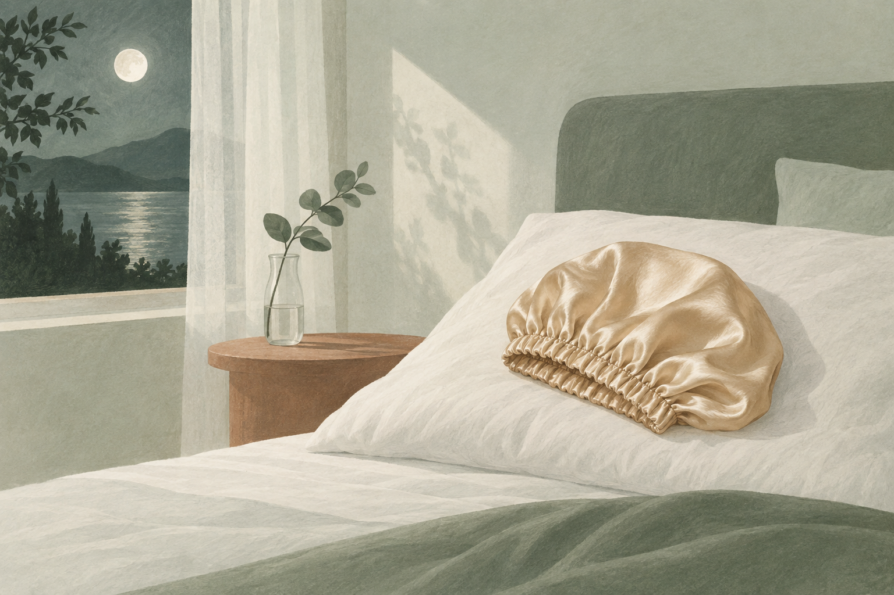
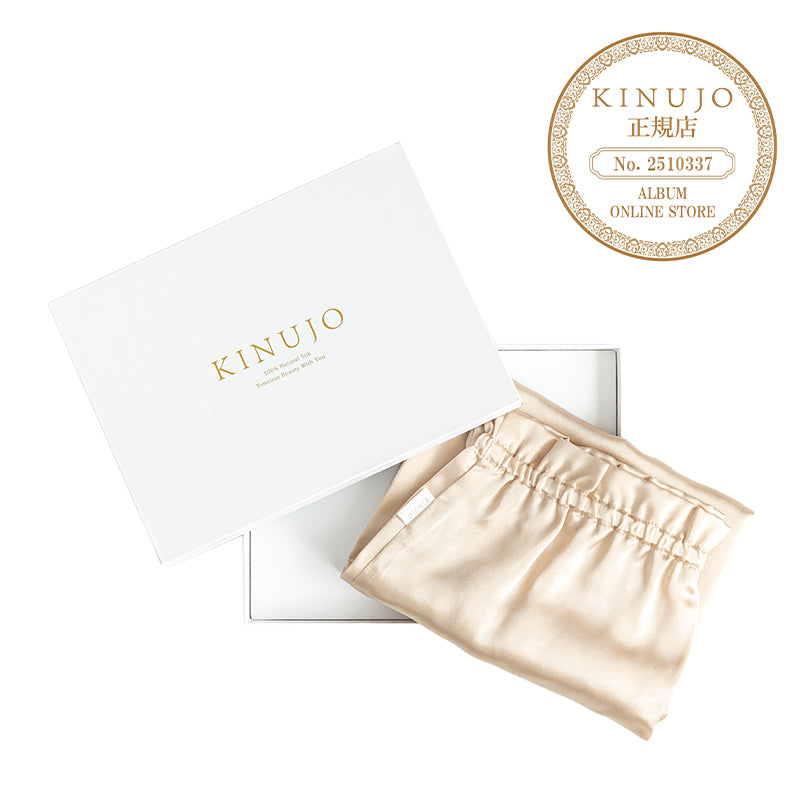

EMPATHY
こんな「寝ている間のことは、考えたこともなかった」、心当たりありませんか。
- 夜はちゃんとケアしたのに、朝起きると毛先が絡まっている
- 寝癖を直すために、朝またドライヤーやアイロンを当てている
- 髪が半乾きのまま、そのまま布団に入ってしまう日がある
- 枕カバーの素材を、一度も気にしたことがない
- ロングヘアを、何もまとめずにそのまま寝ている
- 自分が一晩に何回寝返りを打っているか、知らない
- ヘアケアは「起きている間にやるもの」だと、無意識に思っている
一つでも頷いたなら、あと3分だけ読み進めてほしいんです。
私はこのシリーズで、11回かけてアイテムを揃えてきました。合計¥53,180。前回はタオルまで見直して、濡れた髪にいちばん最初に触れるところも整いました。
その前回の記事で、私はこう書いています。「正しい拭き方を意志で続けるより、そうしたくならない道具に替えるほうが早い」。
書いたあとで、もう一段考えました。そもそも、意志がまったく使えない時間があるな、と。
寝ている間です。
11本を「いつ使うか」で分けてみると、お風呂の中が4本、お風呂上がりが3本、仕上げが2本、頭皮が2本。──11本とも、起きている間に、自分の手で使うものでした。

IF NOTHING CHANGES
正直に言うと、いちばん引っかかったのは「枕カバーが普通の綿だったこと」じゃありません。
1日でいちばん長い時間を、11回とも一度も考えていなかったことのほうです。
1日のうちで、髪がいちばん長く何かに触れ続けているのはどこか。枕でした。
仮に1日6時間寝るとすると、1年でおよそ2,190時間。第10弾で書いたドライヤーは1日10分として年に約60時間だったので、その約36倍です。前回のタオルは1回数分。桁がまったく違いました。
しかも、この6時間には決定的な違いがあります。自分では何もできないということです。何回寝返りを打っているのか知らないし、止めようと思っても止められない。第1〜11弾の話は全部「気をつければ変えられること」でしたが、ここだけは気をつけようがありません。
そして、この状態はとても気づきにくい。寝ている間のことは、そもそも見ていないからです。朝起きて毛先が絡まっていても、それを「寝ている間の摩擦の結果」だとは考えない。前の晩のケアが足りなかったのかな、と思って、また何かを足そうとする。
半年後も、たぶん同じです。洗面台には13本目、14本目の新しいアイテムが増えていて、夜にどれだけ丁寧に整えても、毎晩6時間、同じ枕に擦られ続けている。
いちばんもったいないのは、ここです。第1〜11弾で、"起きている間に何をするか"の答えはもう出そろっているんです。出ていないのは、寝ている6時間に何が起きているかのほうだけ。
──ただ、先に言っておきます。この回でいちばんのハードルは、たぶん値段ではありません。洗濯です。それも後半で正直に書きます。
THE TURN
そこでたどり着いたのが、「KINUJO シルクリッチ ナイトキャップ」でした。
ここで一つ、はっきりさせておきたいことがあります。第1〜11弾で紹介してきたものは、11本とも「起きている間に、自分の手で使うもの」でした。
これは欠点ではありません。ケアの中心は、自分でできることを整えることだからです。11本とも、その役割を果たしてくれました。
一方で今回のものは、使う時間そのものが違います。被ったあとは、自分が寝ている間、代わりに髪を守り続けるもの。シリーズで初めての、寝ている間に働くアイテムになります。
言ってしまえば、第1〜11弾が"起きている間に自分でやること"。そしてこの1枚が"寝ている間に任せること"。自分でやれることは11回で揃いました。12回目は、任せるほうです。
私がこの1枚を選んだ理由は、大きく3つ。
意志が届かない時間を、道具で埋められる
前回「意志で続けるより道具に替えるほうが早い」と書きました。でも寝ている間は、意志そのものが使えない。気をつけようがない時間は、道具に任せるしかありません。
時間の長さが、これまでと桁違い
ドライヤー1日10分、タオル数分に対して、睡眠は仮に6時間。年間でドライヤーの約36倍です。ケアの中で髪にいちばん長く触れている時間に、初めて手を入れます。
¥9,350。シリーズの最高額は更新しない
第10弾のドライヤーと同額です。同じKINUJOのピローケース(¥13,200)を主役にしなかった理由の一つがこれでした。ピローケースは、被るのが合わない人向けの選択肢として後半で紹介します。
「起きている間に自分でやること」から、「寝ている間に任せること」へ。11回かけて自分でできることを揃えてきたからこそ、自分の手が届かない6時間に目が向きました。
※睡眠時間・年間時間は仮定に基づく概算です。摩擦や乾燥の軽減に関する記載はメーカーの公表内容に基づくものであり、効果を保証するものではありません。感じ方には個人差があります。
THE PRODUCT
KINUJO シルクリッチ ナイトキャップとは
KINUJO(キヌージョ)は、シルクの名前を冠したヘアケアブランドです。第1〜11弾で登場したオラプレックス、ケラスターゼ、リンク、LOA、資生堂プロフェッショナル、SINN PURETE、ルベル、クレイツ、ハホニコとは重なりません。シリーズ初登場です。美容室ALBUMの公式通販は、KINUJOの正規店として扱っています。
そして商品の種類も、シリーズ初です。第1〜11弾は、化粧品が8本、ブラシが1本、家電が1台、タオルが1枚。今回は、寝ている間に被るものです。使う時間帯そのものが変わる、シリーズ唯一の1枚になります。

- タイプ
- ナイトキャップ(シリーズ初の、寝ている間に使うもの)
- 価格
- ¥9,350(税込)/ 第10弾と同額。シリーズ最高額は更新しない
- 素材
- 天然シルク100%。メーカーによれば最高ランクの6Aグレード
- 生地
- 19匁(もんめ)の高密度シルク。匁はシルク生地の重さの単位で、数字が大きいほど密度が高い
- 形
- 全長58cmの筒型。ロングヘアも毛先まで収まるとされています
- フィット
- 全周ゴム仕様。締め付け感を抑えながらフィットする、とメーカーは説明しています
- 摩擦について
- 睡眠中の摩擦や乾燥から髪と頭皮を守り、寝癖・絡まり・切れ毛を軽減する、とされています
- うるおい
- シルクの吸湿性・放湿性で、うるおいを保つとされています
- 使い方
- 髪を軽くまとめ、毛先までキャップに収める → 全周ゴムを頭にフィットさせる → そのまま就寝
- お手入れ
- 30℃以下のぬるま湯と中性洗剤でやさしく手洗い。洗濯機・乾燥機・漂白剤・脱水機は不可。陰干し
- カラー
- シャンパンゴールド / ロゼ ピンク(どちらも¥9,350)
- ブランド
- KINUJO・シリーズ初登場
この1枚のいちばんの特徴は、今のケアを1つも置き換えないという点です。シャンプーもトリートメントもオイルもバームもエッセンスもブラシもドライヤーもタオルも、今のまま。第1〜11弾で作った流れには、何も手を加えません。全部やり終えたあと、最後に被って寝るだけです。
そして正直に書いておくと、私がこれを選んだ決め手は「6Aシルクだから」ではありませんでした。シルクの等級や匁数は、私には手で触った感触くらいでしか確かめようがありません。
決め手になったのは、もっと単純な部分です。寝ている間は、自分では何もできない。だったら、被った時点で仕事が終わるものがいい。一度被ってしまえば、そのあと6時間、私が何もしなくても髪は包まれたままです。
※上記の素材・等級・構造・効果に関する記載はすべてメーカーの公表内容に基づくものです。効果を保証するものではなく、感じ方には個人差があります。
WHY IT WORKS
「で、結局寝るときに被るだけで何が変わるの?」に、飾らず正直に答えます。
11回かけて「起きている間に自分でやること」を揃えてきたからこそ、12回目でようやく「寝ている間に任せること」に目が向きました。これは、11本ぶん遠回りしたからこそ出てきた、私のいちばん正直な実感です。
※上記は素材・構造・使い勝手に関する説明です。効果には個人差があり、特定の結果を保証するものではありません。
WHY TRUST IT
正直に言うと、私は「最高級シルクだから」だけでは商品を信じないタイプです。
それでもこの1枚を紹介したいと思えたのは、こんな背景があるからです。
効果ではなく、時間の長さで説明できる
シルクの等級や匁数の違いは、正直なところ私には確かめようがありません。だから主な判断材料にしていません。私が納得したのは「1日でいちばん長く髪に触れているのは枕だ」という、確かめようのある事実のほうです。
弱点を、メーカー自身が隠していない
手洗い必須であること、洗濯機・乾燥機が使えないことが、商品ページにはっきり書かれています。さらに同じKINUJOのピローケースのページでは「ナイトキャップを被らずに美髪ケアしたい方」向けと、両者の違いまで説明されている。合わない人がいることを前提にしている説明は、信用しやすいと感じました。
第10弾・第11弾と矛盾しない。むしろその続き
ドライヤーで乾かし、タオルで押さえて拭き、最後に被って寝る。前の2回で整えたものを、寝ている間に崩さないための1枚です。前回までに何を買った人にも、何も買っていない人にも当てはまります。
シリーズの最高額は更新していない
第1弾¥3,740、第2弾¥4,180、第3弾¥4,290、第4弾¥7,260、第5弾¥8,800、第6弾¥5,776、第7弾¥2,200、第8弾¥3,740、第9弾¥2,950、第10弾¥9,350、第11弾¥894。合計¥53,180、平均¥4,835。今回の¥9,350は第10弾と同額です。より高いピローケース(¥13,200)は、主役ではなく選択肢として紹介しています。
正規店で買える
ALBUM ONLINE STOREは、美容室ALBUMの公式通販で、KINUJOの正規店です。シルク製品は特に品質のばらつきが気になるので、私は購入先を確認してから紹介しています。
買わなくてもできることを、先に書ける
髪を完全に乾かしてから寝る。ロングヘアはゆるくまとめてから寝る。この2つはお金がかかりません。前回のタオルの回と同じく、今回も「買わない選択肢」を先に書いています。
WHAT PEOPLE NOTICE
こんな使用感(声の傾向)
寝ている間のことなので、自分では見えません。だからこそ、盛らずに、朝起きて分かることだけを整理してみます。
朝の毛先について
いちばん分かりやすかったのはここでした。朝、手ぐしを通したときの引っかかり方が変わった気がします。ただ、同じ時期に「完全に乾かしてから寝る」も始めたので、どこまでがキャップの効果なのかは正直なところ切り分けられていません。
被り心地について
最初の数晩は、頭に何かがある感覚が気になりました。これは人によってかなり違うと思います。寝るときに何かを被るのがどうしても苦手な人は、無理せずピローケースという選択肢を考えたほうがいいと思います。
ずれについて
寝相は人それぞれなので、朝どのくらいずれているかも人によると思います。全周ゴムでフィットさせる作りですが、寝返りの多い人は、被るときに毛先までしっかり中に収めておくのがいいと思います。
洗濯について
ここは正直に書きます。手洗いは面倒です。30℃以下のぬるま湯と中性洗剤でやさしく洗って、陰干し。洗濯機にも乾燥機にも入れられません。毎晩使うものなので、この手間を続けられるかどうかが、実は値段よりも大きな分かれ目だと思います。
ロングヘアについて
全長58cmの筒型なので、長い髪でも毛先まで収まる作りです。髪を軽くまとめてから入れると収めやすいです。ショートヘアの方は、長さを持て余すかもしれません。
期待しすぎないほうがいい部分
ここも正直に書きます。キャップを被っても、髪が生まれ変わることはありません。ダメージが治るわけでもない。あくまで「寝ている間の摩擦を減らす」ための道具です。そして、寝る前に髪が濡れたままなら、その効果もたぶん半減します。
もちろん、髪の長さも寝相も人それぞれ。だからこそ、「自分が寝ている6時間に、髪に何が起きているか」で考えてみる価値がある道具だと思っています。
※上記は一般的な使用感の傾向および個人の感想であり、効果を保証するものではありません。
FAQ
よくある質問
ナイトキャップとピローケース、どちらがいいですか?
洗濯機で洗えますか?
ショートヘアでも使えますか?
寝ている間に外れませんか?
髪が濡れたまま被ってもいいですか?
2色ありますが、違いはありますか?
第1〜11弾のケアと併用できますか?
被るだけで髪が傷まなくなるということですか?
ABOUT THE PRICE
価格の考え方
KINUJO シルクリッチ ナイトキャップは ¥9,350(税込)。第10弾のドライヤーと同じ金額で、シリーズの最高額タイです。最高額は更新していません。同じKINUJOのピローケース(¥13,200)を主役にしなかった理由の一つがこれです。
前回のタオルが¥894だったので、また上がりました。高いものも安いものも、筋が通れば紹介する。このシリーズはそういうやり方でいきます。
これまでの11本を並べてみます。¥3,740 / ¥4,180 / ¥4,290 / ¥7,260 / ¥8,800 / ¥5,776 / ¥2,200 / ¥3,740 / ¥2,950 / ¥9,350 / ¥894。合計¥53,180、1本あたりの平均は¥4,835。今回の¥9,350は、その約2倍です。
ただ、これは減りません。第7弾のブラシ、第10弾のドライヤー、第11弾のタオルに続く、シリーズ4つ目の買い切りです。仮に1年使えたとすると1晩あたり約¥26、2年なら約¥13。ただしシルクは扱い方で持ちが大きく変わるので、あくまで仮定の概算です。
そしてもう一度、比率の話をさせてください。私はこのシリーズで、11本・合計¥53,180を「起きている間」に使ってきました。同じ期間、1日でいちばん長い「寝ている間」に使った金額は¥0です。──毎回この計算をして毎回笑っているのですが、私はどうやら、毎回どこか1箇所を完全に空白にしたまま買い物をしているらしいんです。
そして繰り返しますが、この回でいちばんのハードルは値段ではなく洗濯です。手洗いを続けられそうか、先にそこだけ考えてみてください。それから、お金をかけずにできる「完全に乾かしてから寝る」は、今夜からできます。まずそこからで十分です。
※価格・在庫は変動します。最新情報は必ず商品ページでご確認ください。1晩あたりの金額は使用期間を仮定した概算であり、耐久性は使用状況やお手入れによって変わります。
BEFORE YOU GO
安心して試すために
「寝るときに被るだけで、そんなに変わるの?」その気持ち、よく分かります。私も11回ぶん、そこを一度も考えませんでした。ヘアケアといえば起きている間にやることで、寝ている間に何が起きているかは考えたこともなかった。
だからこの回は、順番を先に書いておきます。まず、髪を完全に乾かしてから寝てください。
これはお金がかかりません。半乾きのまま布団に入れば、どんなキャップを被っても、濡れた髪が6時間擦られることになります。第10弾で書いた「乾かす」も、第11弾で書いた「拭く」も、実はこのための準備でした。ロングヘアなら、ゆるくまとめてから寝るのもおすすめです。強く結ぶと跡がつくので、ゆるく。
そのうえで、朝の絡まりがまだ気になるなら。そのときに初めて、寝ている間に任せる道具を考えてもらえればいいと思っています。
そして買う前に、2つだけ確認してください。手洗いを続けられそうか。寝るときに何かを被るのが平気か。後者がどうしても無理そうなら、ピローケースという選択肢もあります。
いきなり12個すべてを揃える必要もまったくありません。第1〜11弾で紹介したケアを、まず自分のペースで試す。そのうえで「起きている間のことはひと通り整ったな」と思えたときに、寝ている6時間を思い出してもらえれば十分です。
起きている間のことは11回で揃いました。12回目は、寝ている間のことです。
※お手入れは商品の表示・取扱説明に従ってください。シルクはデリケートな素材のため、強い摩擦や引っ掛けにご注意ください。被り心地や締め付け感には個人差があります。
LAST WORD
「洗う前」「洗う」「毎日のトリートメント」「拭く」「乾かす前」「乾かす」「仕上げ」「週数回」「香り」「頭皮」「道具」。11回かけて、起きている間のことはもう出揃っています。
でも、1日でいちばん長い6時間の話は、まだ一度もしていませんでした。
夜にどれだけ丁寧に整えても、寝ている間に何が起きているかは、11回とも一度も出てきていません。
このまま13本目の新しいアイテムを探し続けて、「まだ何か足りないのかも」と思いながらまた半年過ごすのか。それとも、今夜だけ、髪を完全に乾かしてから布団に入ってみるのか。
後者にはお金がかかりません。今夜から試せます。
追伸
正直に言うと、この1枚も「魔法のナイトキャップ」ではありません。これはシルクのキャップであり、髪が治る・傷まなくなるといった効果を持つものではない。被った翌朝に別人の髪になるわけでもありません。感じ方には個人差があります。
それでも私がこれを紹介したいのは、「気をつければ変えられる時間」と「気をつけようがない時間」があることを、12回目にしてやっと言葉にできたからです。第8弾では「順番を疑う」、第9弾では「もうやっている工程の中身を疑う」、第10弾では「塗るもの以外も髪に触れている」、第11弾では「どう扱っているか」と書きました。今回わかったのは、そのどれもが起きている間の話だった、ということでした。
12回に分けて紹介してきましたが、この12個を全部揃える必要はまったくありません。とくに今回は、先に「完全に乾かしてから寝る」だけで済む部分があります。市販品ジプシーだった頃の私は、うまくいかないたびに次に使うものを探していました。自分の手が届かない時間があるとは、考えたこともなかった。
もし、アイテムはひと通り揃っているのに、朝起きるたびに「まだ何か足りない気がする」が消えていないなら。足りない最後の1つは、13本目のボトルではなく、あなたが寝ている6時間のほうかもしれません。今夜は、髪を完全に乾かしてから眠ってみてください。それが今回いちばんお伝えしたいことです。